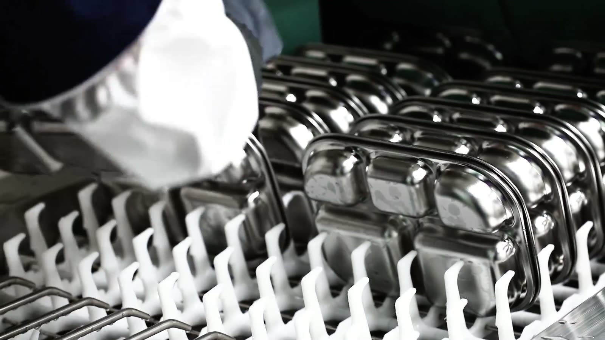

매일 살균 세척을 마친 식기가
원으로 갑니다.
회수부터 세척, 포장, 배송까지 식기 관리의 전 과정을 THE 좋은식판이 맡습니다. 원에서는 포장을 뜯어 식탁에 올리기만 하면 됩니다.

하루의 순환
식기는 원과 세척 공장 사이를 매일 오갑니다. 원에 남는 일은 없습니다.
사용한 식기를 원에서 가져옵니다
급식 후 남은 식기는 전용 박스에 담아 두시면 됩니다. 설거지도, 헹굼도, 보관도 필요 없습니다.
6단계 살균 세척 후 진공 포장
80℃ 고온수 세척부터 120℃ 살균 건조까지 거친 뒤 전수 위생 점검을 하고 진공 포장합니다.
매일 진공 포장 식기 배송
진공 포장된 식기가 매일 원에 도착합니다. 포장을 뜯는 순간까지 살균 상태가 유지됩니다.
6단계 살균 세척 공정
사람 손으로는 할 수 없는 온도와 압력으로, 눈에 보이지 않는 잔류물까지 걷어냅니다.
고온수 세척
모든 세척과 헹굼을 80℃ 이상 고온수에서 진행합니다.
80℃ 이상수류 불림 세척
수류 펌핑 세척기의 고온수에 불려 굳은 오염을 떼어냅니다.
1차 불림 세척초음파 버블 세척
손이 닿지 않는 미세한 틈까지 초음파 버블로 씻어냅니다.
미세 오염 제거고온·고압 헹굼
대형 세척기에서 3차에 걸친 고온 고압 헹굼을 추가로 진행합니다.
3차 헹굼고온 살균 건조
120℃ 이상 고온 건조로 식중독균까지 사멸시킵니다.
120℃ 이상위생 점검·진공 포장
고온 살균과 전수 위생 점검을 마친 식기를 진공 포장해 당일 배송합니다.
당일 배송아이 한 명에게 가는 한 세트
아이가 한 끼에 쓰는 식기를 한 세트로 묶어 진공 포장합니다.

식판
스테인리스 유아용 식판입니다. 코팅이 벗겨질 걱정 없이 고온 살균이 가능합니다.
수저 · 포크
아이 손에 맞는 크기의 수저와 포크를 식판과 함께 포장합니다.
간식기
오전·오후 간식 시간에 쓰는 간식기까지 같은 기준으로 세척합니다.
식기 구성은 원의 급식 방식에 맞춰 조정할 수 있습니다. 도입 상담 때 말씀해 주세요.
가정에서 쓰는 개인 식판과
무엇이 다른가요
같은 스테인리스 식판이라도 씻는 온도와 방법, 그리고 확인하는 방식이 다릅니다.
검사 항목과 결과는 실제 결과지를 기준으로 원에 전달됩니다.
도입 상담부터 시작해 보세요
원 규모와 급식 방식을 알려주시면 맞는 구성으로 안내해 드립니다.
키즈노트 스마트주문으로도 신청하실 수 있습니다.